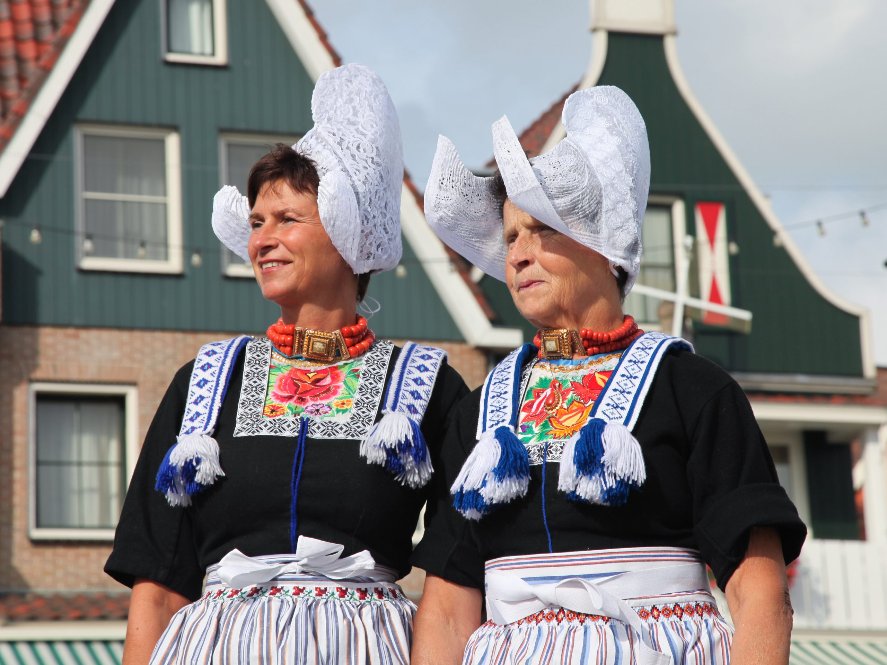

Klederdracht
De klederdracht van Volendam is de streekdracht die vanouds in Volendam gedragen wordt. Het meest opvallend is het witte kanten mutsje van de vrouwen, de hul, dat internationaal bekend is geworden via de reclamefiguur Frau Antje. Deze typische klederdracht kwam in de jaren tachtig van de 20e eeuw vrijwel niet meer voor. In de 21e eeuw zijn de kostuums vooral populair onder toeristen die een bezoek brengen aan Volendam.
Mannen
De bovenkleding van de mannen is voornamelijk zwart. De broeken hebben een model dat afstamt van de broeken van zeelieden uit de 17e eeuw. De broeken hebben een voorklep die vastgemaakt wordt met twee grote zilveren klepknopen, vaak met een afbeelding van een ruiter.[1] Achter in de band van de broek zit een groen koordje. De kleur daarvan komt terug in de muts die 's winters gedragen wordt. Op het bovenlichaam dragen de mannen een wit hemd van linnen, dat aan de bovenkant een geborduurde boord heeft. Vanouds was het een volledig wit hemd, later resteerde slechts een befje met de geborduurde boord. Het borduurwerk is gemaakt met zwarte kruissteken. Het boordje heeft twee gouden knopen om het te sluitend. Over dat hemd of befje dragen mannen een rood/wit gestreepte baai, een mouwloos hesje met twee rijen knopen van been. Over de baai dragen de mannen een nauw zwart jasje, blempie of blempt genoemd, dat eerder blauw was. Deze dialectwoorden zijn een samentrekking van blauw en hempie. In de winter wordt nog een dikke zwarte jas gedragen, die aan de hals is afgewerkt met een blauw fluwelen band, katje' genoemd. Bij de jas dragen de mannen een krawats, een zwarte sjaal. De voering van de jas is diepblauw.'s Zomers zijn de mannen blootshoofds of dragen zij een platte zwarte pet. 's Winters dragen sommigen een muts met een rand van zwart bont, die het ruige muissie genoemd wordt. Deze muts wordt met drie groene lintjes dichtgestrikt. In de rouw zijn deze strikken zwart. De muts is vrijwel gelijk aan de karpoets van de Urker vissers. Vanuit het eiland Marken wordt over de Volendammers gesproken over langbroeken.De wijde zwarte broeken van de Volendammer mannen zijn dan ook lang, tot aan de voet, terwijl de mannen volgens de Marker klederdracht broeken tot bovenaan de kuit dragen. De dracht wordt op zondag aangevuld met een zilveren knoop met ketting die op het blempie wordt gedragen, en met een zwart zijden das.Op de andere schouder zit een loze eivormige knoop. De ketting en die knoop zijn een overblijfsel van de sluiting van de blempt, die verdwenen is. Oorspronkelijk was die zogenoemde blempiesknoop hol en kon die geopend worden, om er kruiden in te stoppen. Als schoeisel draagt de man door de week klompen, op zondag lage pantoffelschoenen met een zilveren gesp.
Vrouwen
De dagelijkse dracht van vrouwen is erg eenvoudig. Vrouwen dragen een zwarte rok, met daarboven een schort in de kleuren wit, blauw, oranje of bruin. Tijdens het werk wordt een gestreept of geruit schort gedragen. Aan de bovenkant van het schort bevindt zich een strook borduurwerk, veelal machinaal gemaakt.[1] Boven de onderkleding dragen verschillende de vrouwen sinds ca. 1925 een zwart katoenen jak, bedrukt met kleine bruine en witte motiefjes. Om een goede pasvorm te verkrijgen wordt het jak boven en onder de borsten samengeplooid. Bij het maken van de plooitjes wordt rekening gehouden met het motief. De mouwen van de jakjes zijn gevoerd met stof van oude schorten. Als de mouwen omgevouwen worden, worden deze kleuren zichtbaar. In de periode daarvoor droegen alle vrouwen een zwart kletje, later bleven slechts enkelen nog dagelijks gebruiken. Het woord kletje is afkomstig van colette, het Franse woord voor kraag. Het kletje heeft een vierkante hals, afgezet met langettenband, een brede witte band met ingeweven zwart patroon. Het kletje gaat dicht met elf haken en oogjes, die worden verborgen achter een blauw koord. 's Winters dragen vrouwen in elk geval een jakje of kletje, maar daarbij ook een kort smal dasje om de hals. Dat dasje is veelal blauw/wit van kleur, met kwasten aan de uiteinden. Ook dragen zij 's winters een grote donkere omslagdoek om de schouders, met donkere strepen in blauw of bruin. Volgens de traditie dragen vrouwen een bloedkoralen halsketting, met drie strengen, zo groot mogelijke,kralen. Aan de voorzijde zit een groot, rechthoekig, gouden slot. Op de hoeken van het slot staan engeltjes, en in het midden is achter een venster een afbeelding te zien van meestal een schip. Ook bevindt zich in het midden van het slot soms een haarlok op een afbeelding van een graf. Traditioneel draagt een vrouw spitse gelakte muiltjes.
bron: Wiki PediaVisserij
DE economie van Volendam wordt gedragen door oma's. Voor dag en dauw staan zij op om op hun kleinkinderen te passen. Om vijf uur 's morgens is het spitsuur in Volendam. Met busjes vertrekken bouwvakker geworden vissers naar Amsterdam of elders. Vissen is niet meer lonend. Hun vrouwen werken bij bedrijven in Volendam of staan in winkels in de hoofdstad.
Met busjes vertrekken bouwvakker geworden vissers naar Amsterdam of elders. Vissen is niet meer lonend. Hun vrouwen werken bij bedrijven in Volendam of staan in winkels in de hoofdstad.
Muziek
Palingsound is het kenmerkende geluid van de palingpop, een soort popmuziek die door sommige Volendamse artiesten en groepen wordt geschreven en gezongen.[1]
Bekende vertegenwoordigers van dit genre zijn The Cats (in de periode 1968-1973), Left Side, BZN (in de periode 1977-2007), Nick & Simon (2006-2023), Piet Veerman (ex-The Cats),  Jan Keizer (ex-BZN), Anny Schilder (ex-BZN), Carola Smit (ex-BZN), Maribelle, Jan Smit, Monique Smit en Martine Bond.
Jan Keizer (ex-BZN), Anny Schilder (ex-BZN), Carola Smit (ex-BZN), Maribelle, Jan Smit, Monique Smit en Martine Bond.
Voetbal
FC Volendam is een Nederlandse voetbalclub afkomstig uit Volendam. De club is opgericht op 1 juni 1977 als afsplitsing van RKSV Volendam (opgericht als RKAV op 1 juni 1920). Het tenue bestaat uit een oranje shirt en een zwarte broek: daarom wordt de club ook wel 'Het Andere Oranje' genoemd. De thuiswedstrijden worden gespeeld in het Kras Stadion.
Volendam behaalde tot op heden tweemaal de finale van de KNVB beker. De eerste keer (1958) bleek Sparta met 4-3 te sterk. In mei 1995 ging Feyenoord er met de beker vandoor na een 2-1 overwinning. De hoogste klassering van de club is een zesde plaats in de Eredivisie in de seizoenen 1989/90 en 1992/93. Kenmerkend voor Volendam zijn de vele lokale spelers, met namen als Schilder, Tol, Steur, Veerman en Jonk en de vele promoties en degradaties van en naar de Eredivisie. De botter die bij een promotie altijd over de Dijk rijdt en waarmee de spelers gehuldigd worden heet dan ook De Heen en Weer. De club degradeerde in het seizoen 2008/09 voor het laatst uit de Eredivisie. In het seizoen 2021/22 eindigde Volendam op de tweede plaats in de Eerste Divisie waardoor het direct promoveerde naar de Eredivisie. Zo keerde Volendam na dertien jaar terug op het hoogste niveau.
Kenmerkend voor Volendam zijn de vele lokale spelers, met namen als Schilder, Tol, Steur, Veerman en Jonk en de vele promoties en degradaties van en naar de Eredivisie. De botter die bij een promotie altijd over de Dijk rijdt en waarmee de spelers gehuldigd worden heet dan ook De Heen en Weer. De club degradeerde in het seizoen 2008/09 voor het laatst uit de Eredivisie. In het seizoen 2021/22 eindigde Volendam op de tweede plaats in de Eerste Divisie waardoor het direct promoveerde naar de Eredivisie. Zo keerde Volendam na dertien jaar terug op het hoogste niveau.
Bouw
At vero eos et accusamus et iusto odio dignissimos ducimus qui blanditiis praesentium voluptatum deleniti atque corrupti quos dolores et quas molestias excepturi sint occaecati cupiditate non provident, similique sunt in culpa qui officia deserunt mollitia animi, id est laborum et dolorum fuga. Et harum quidem rerum facilis est et expedita distinctio. Nam libero tempore, cum soluta nobis est eligendi optio cumque nihil impedit quo minus id quod maxime placeat facere possimus, omnis voluptas assumenda est, omnis dolor repellendus.